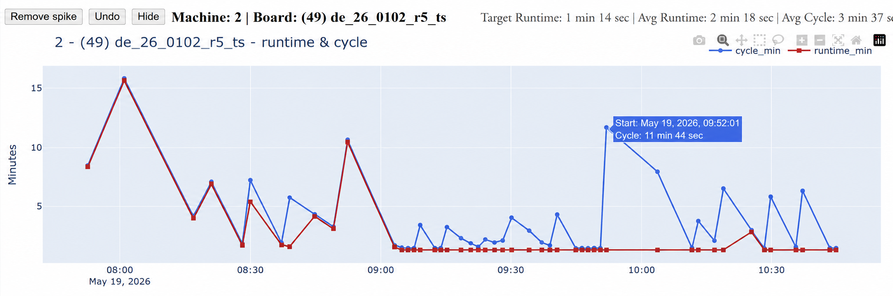
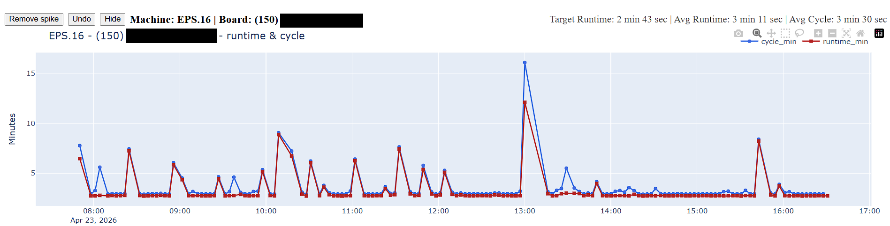

📊 Proline Graphs
Pyline Solutions provides software for live line monitoring, historical board runtime review, rejection analysis, yield improvement, scrap reduction, and audit-ready operational insight.
Two focused tools for PCBA performance and quality analysis. One tool provides runtime visibility. The other provides rejection and root cause insight.
🔍 Turning SMT Data into Real Production Insight
In many PCBA environments, vast amounts of machine data are generated every day — but very little of it is actually used effectively. Over the past few months, I’ve been working on a solution that transforms raw pick-and-place data into something far more useful:
📊 Proline Graphs: A real-time runtime & cycle time visualization tool
This system provides:
- Live tracking of board runtime throughout the day
- Clear visualization of cycle times across production
- Instant identification of downtime and inefficiencies
- Historical analysis using a simple date-based view
Instead of digging through logs or spreadsheets, engineers and managers can now see exactly how production is performing — as it happens.
💡 The goal is simple: Make data actionable, not just available.


